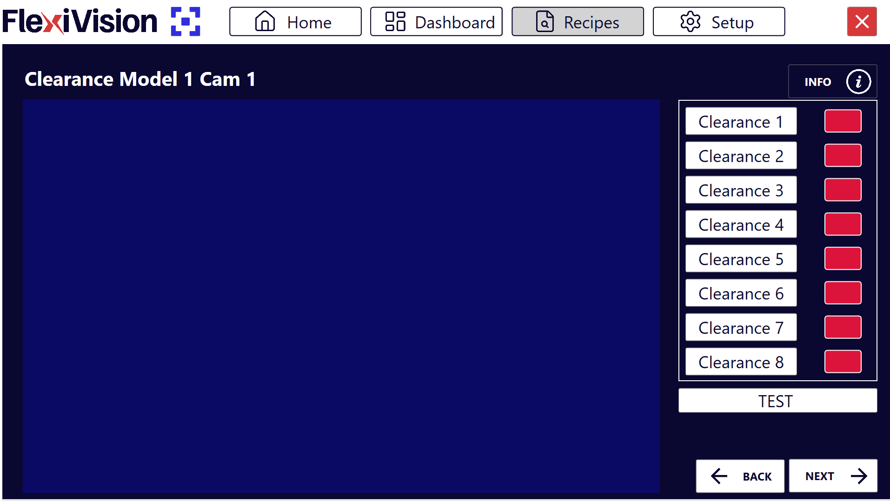
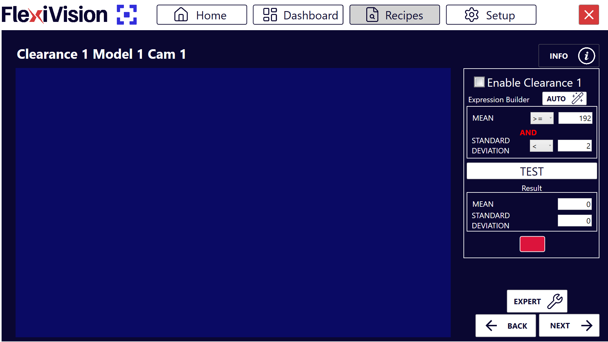
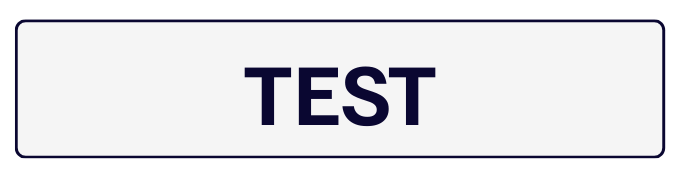

Le Clearances#
In questa pagina vedremo come configurare le Clearances per verificare che le aree critiche siano libere da ostacoli.
Cos’è una Clearance?
Una Clearance in FlexiVision è uno strumento che monitora un’area specifica dell’immagine per verificare che sia libera. Viene utilizzato per controllare, ad esempio, che lo spazio necessario alla pinza per afferrare il componente non sia occupato da altri oggetti.
Note
Principio di Funzionamento.
L’istogramma analizza i livelli di bianco e nero in un’area definita:
🟢 Verde → Area libera (OK per il prelievo)
🔴 Rosso → Area occupata (presenza di ostacoli)
Attention
L’utilizzo delle Clearances varia al variare del pezzo di cui si deve fare il modello. Questa è una valutazione a carico della figura incaricata di creare l’applicazione.
Step 1: Setup Fisico#
Danger
Attenzione! Vi mostreremo la procedura con il Tool Pinza, in quanto necessita obbligatoriamente della configurazione di Clearances per i modelli. Altri Tool per il robot potrebbero non aver bisogno delle Clearances per simularne l’ingombro.
1. |
Dal pendant del robot:
|
2. |
Simulare una presa:
|
3. |
Posizionare due oggetti ai lati del componente per simulare l’ingombro della pinza (ai lati della pinza per avere, una volta rimosso il robot, l’area libera fra il componente di riferimento e i due oggetti rappresenterà l’area di ingombro della pinza del robot) Important Lasciare gli oggetti leggermente più distanti del necessario per evitare errori nella creazione del modello. (margine 2-3 mm) |
4. |
Annotare le Coordinate:
Important Annotare queste coordinate! Saranno indispensabili nella fase di calibrazione robot. |
5. |
Allontanare il robot con il pendant senza spostare nulla sulla superficie |
Step 2: Acesso alla pagina Clearance#
1. |
Dalla pagina Locator Model, dopo aver cliccato su Next, si aprirà l’elenco delle clearance disponibili (fino a 8 per modello). Pagina Clearances
|
||||||||||||
2. |
Cliccare su Clearance 1, si aprirà la pagina relativa alla configurazione della prima clearance “Clearance 1” Pagina Clearance 1
|
Step 3: Attivazione e Posizionamento Area#
Cliccare su Enable Clearance per attivare la clearance |
|
Spostare il riquadro della Clearance nell’area che deve rimanere libera
Important Creare sempre una clearance leggermente più grande dello stretto necessario per evitare falsi errori. |
Step 4: Configurazione Automatica#
Cliccare su |
|
Cliccare su  |
|
Verificare che il riquadro diventi verde |
|
Cliccare su |
 in Expression Builder
in Expression Builder
Warning
Cosa fare se il test fallisce (riquadro rosso)?
Se dopo AUTO e TEST il riquadro rimane rosso:
Possibili cause:
C’è effettivamente qualcosa nell’area (pezzo, ombra, sporcizia)
L’illuminazione è variata tra configurazione AUTO e TEST
L’area selezionata include bordi del FlexiBowl o artefatti
Soluzioni:
Verificare visivamente che l’area sia completamente libera
Pulire la superficie del FlexiBowl se necessario
Riposizionare leggermente il riquadro escludendo bordi/artefatti
Ripetere AUTO con condizioni di illuminazione stabili
Ripetere TEST per verificare
Clearance Multipli - Quando Usarli#
Crea più clearance quando:
Il tool del robot è una pinza: serve una clearance per ognuna delle due aree occupate dalla pinza ai lati del componente di riferimento
Ci sono più punti critici da monitorare
L’area di presa ha geometrie particolari
Step 2-3: Ripetizione#
Selezionare una nuova clearance dalla pagina elenco delle Clearances, tipo “Clearance 2” e Ripetere gli Step 2-3. Ripetere la procedura per ogni clearance necessario (fino a 8 per modello).
Step 4: Test Complessivo#
Nella pagina di elenco di tutte le clearance, cliccare su TEST Visualizzare tutte le clearance contemporaneamente
Interpretazione Stati#
Stati delle Clearance#
Colore |
Stato |
Significato |
|---|---|---|
🟢 Verde |
OK |
Area libera, prelievo possibile |
🔴 Rosso |
Triggered |
Area occupata, prelievo non sicuro |
Cosa Significa “Triggered”?#
Una clearance diventa rossa (triggered) quando rileva al suo interno:
Presenza di altri componenti
Ombre o riflessi significativi
Qualsiasi elemento che rende l’area non libera
Step 5: Finalizzazione#
Dopo aver configurato tutte le clearance necessarie, cliccare su Next
Si aprirà la pagina Robot Model Pick Cam
See also
Procedi alla Calibrazione Robot per completare la configurazione.